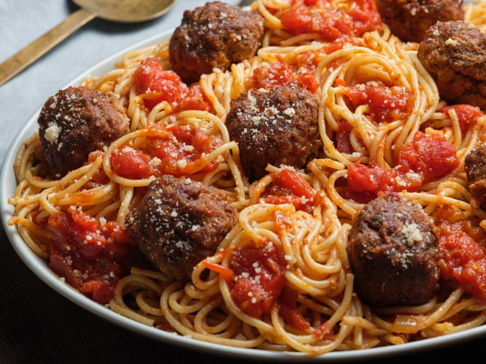

Spaghetti Recipe

Description
Who knew that the same technique for shredding pulled pork with two forks will also work for meatballs? In this case, the method ensures that your ingredients are thoroughly mixed yet not compressed, so the resulting meatballs are tender and light. After browning the meatballs, we finish them in a hearty tomato sauce. The meatballs flavor the sauce as they finish cooking.
Ingredients
- 1 cup panko
- 1/2 cup grated Parmesan
- 1/4 cup finely chopped flat-leaf parsley
- 1 teaspoon fennel seeds
- 1/2 teaspoon plus a pinch crushed red pepper flakes
- 1 3/4 teaspoons dried oregano
- Kosher salt and freshly ground black pepper
- 1 cup heavy cream
- 1 pound ground chuck
- 1/2 pound ground pork
- 1/2 pound ground veal
- 2 tablespoons olive oil
- 1/2 large onion, chopped
- 2 cloves garlic, finely grated
- 1 tablespoon tomato paste
- 1/2 cup dry white wine
- One 28-ounce can whole peeled tomatoes
- 2 large sprigs basil
- 1 pound spaghetti
Steps
- Whisk together the panko, Parmesan, parsley, fennel seeds, 1/2 teaspoon red pepper flakes, 1 1/2 teaspoons of the oregano, 1 tablespoon salt and 1 teaspoon black pepper in a medium bowl until combined. Stir in the cream.
- Combine the beef, pork and veal in a large bowl. Pull the ground meat apart with two forks as if you were shredding pulled pork, breaking up the clumps and incorporating the meat without compacting it until thoroughly mixed and no clumps remain. Add the panko mixture to the meat and use the same pulling technique to mix until all the ingredients are evenly incorporated.
- Lightly oil your hands. Scoop out portions of the meat mixture with a 1/4-cup measuring cup or large ice cream scoop; roll the meat gently between your hands into balls. Arrange the balls on a rimmed baking sheet.
- Heat 2 tablespoons olive oil in a 12-inch nonstick skillet over medium-high heat. Add half the meatballs and cook, turning and rolling occasionally, until they are browned on all sides, about 5 minutes total; remove to a plate. The meatballs will not be cooked through; they will finish cooking in the sauce. Repeat with the remaining meatballs.
- Reduce the heat to medium, add the onion and garlic and season with salt and pepper. Cook, stirring occasionally, until the onion is tender, 6 to 8 minutes. Add the tomato paste, the remaining 1/2 teaspoon oregano and a pinch of red pepper flakes. Cook, stirring occasionally, until the tomato paste is brick red, about 1 minute. Stir in the wine, scraping any browned bits from the bottom of the pan, and cook until the liquid is almost completely evaporated, about 3 minutes.
- Add the tomatoes and basil to the sauce, smashing and breaking up the tomatoes into bite-size pieces with a wooden spoon. Bring the sauce just to a boil, and then add the meatballs with any accumulated juices. Cover the pan, reduce the heat to low and simmer until the meatballs are cooked through, about 30 minutes.
- Meanwhile, bring a large pot of salted water to a boil over high heat. Cook the spaghetti according to the package directions. Drain well.
- Transfer the meatballs to a plate. Discard the basil and season with salt.
- Add the pasta to the sauce. Gently stir until the sauce coats the pasta. Transfer the spaghetti to a serving platter and top with the meatballs. Sprinkle with Parmesan before serving.
Recipe Source
Return to Odin Recipes